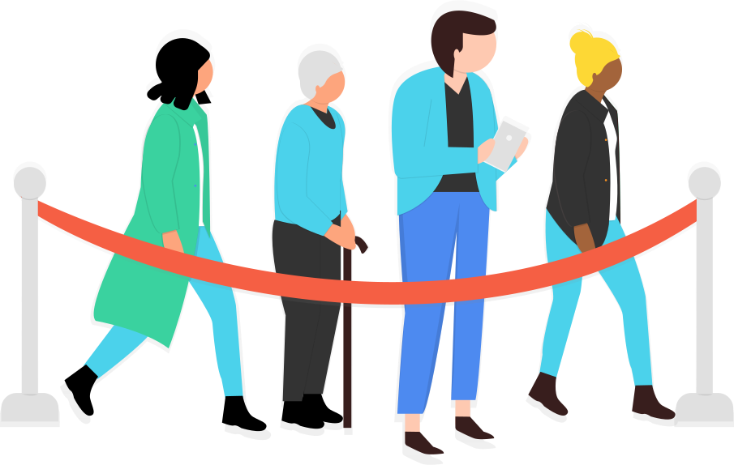

Operationskollen kan hjälpa din klinik att korta köerna till delaktiga patienter att minska strykningar att undvika felmedicinering
Kontakta oss Bli kontaktad Läs mer


Med Operationskollen blir dina patienter och deras anhöriga mer insatta och delaktiga i sin vård.
De ges bättre möjlighet att ta ett aktivt ansvar inför sin operation och i sin rehabilitering.
Helt enkelt - Ett recept på bättre vårdresultat
När operationer ställs in på grund av att en patient missat fasta eller glömt sätta ut
läkemedel står verksamheten i värsta fall med tom operationssal trots kö.
Därför är det viktigt, både för verksamhetens och patientens skull att chanserna
att kunna utföra en planerad operation maximeras, Operationskollen kan hjälpa din
verksamhet att
minska antalet inställda operationer.
Patienterna blir mer insatta och mer delaktiga; Bättre förberedda på vad en operation innebär och vet på förhand hur träning och avdelningsupplägg kommer att se ut. Mer insatta och delaktiga patienter leder till bättre sjukvård och bättre operationsresultat. Ökad förståelse och motivation till rehabilitering ger självfallet bättre träning vilket resulterar i bättre postoperativ funktion och mindre smärtor.
Operationskollen integreras enkelt i verksamheten - Redan i kallelsen till en elektiv operation uppmanas patienten att använda sig av appen. När patienten sedan kommer för ett inskrivningsbesök har hen redan mycket bättre förutsättningar att förstå sin operation och kan vara med och fatta välinformerade beslut
Lanseringen i Västmanland har blivit en succé direkt - integrerat med en nyöppnad elektiv ortopedisk enhet används appen av en stor andel av de som opereras, en vanlig vecka någon månad efter lanseringen använder varje vecka ca dubbelt så många som opereras appen - Appen används helt enkelt flitigt pre-, peri- och postoperativt. Arbetet är dessutom nominerat till Guldskalpellen 2017 .
Som vårdgivare styr och äger ni innehållet - Allt medicinskt innehåll i appen är ert och tar avstamp i den skriftliga information ni använder idag och informationen kan återanvändas hur ni vill.
Intresserad? Kontakta oss så ser vi hur Operationskollen kan passa för just er
Kontakta oss Bli kontaktad Läs merAllt börjar med ett Hej!
Appen följer patienten hela vägen - Inför, kring och efter din operation
Här nedan visar vi ett litet urval av vad Operationskollen kan göra för dina patienter
Oavsett om det gäller smärtlindring efter operationen eller duschning inför kan du vara lugn, Operationskollen hjälper dig!
Appen sållar åt dig - börja med att chatta med vår bot, appen anpassas automagiskt efter dina förutsättningar!
För ett bra operationsresultat krävs träning - Operationskollen visar hur och peppar dig genom din rehabilitering!
Frågor? Appen hjälper dig till svaren eller sätter dig i kontakt med din operationsklinik!
Oroa dig inte över att ha ännu en app att använda för att hålla reda på saker - Operationskollen integrerar direkt med din vanliga kalender, använd vilken app du vill!
Vilken hjälp du får kring din operation ska inte avgöras av storleken på din plånbok. Operationskollen är, och kommer alltid att vara, gratis för dig som patient och anhörig.
Intresserad? Kontakta oss så ser vi hur Operationskollen kan passa för just er
Kontakta oss Bli kontaktadAnpassad efter din mamma patient bror patient syster patient pappa patient
Operationskollen är till för att användas av både patienter och deras närstående.
Genomsnittsålder för patienter skiljer sig stort mellan olika grupper - Appen är från grunden designad för en äldre målgrupp än de flesta appar för att bättre möta dina patienters behov.
Design är nämligen inte bara hur någonting ser ut, det är också hur det fungerar - Operationskollen är designad från grunden för att just din patient och dennes närstående ska ha så bra förutsättningar som möjligt för att kunna tillgodogöra sig din information.
Operationskollen skräddarsys för varje klinik.
Implementeringen utgår därför helt utifrån klinikens förutsättningar, önskemål och prioriteringar.
Tillsammans med Operationskollen utformar ni på kliniken själva ert material.
Vi lotsar er genom hur ert nuvarande patientmaterial kan anpassas för ett mobilt
format. Kliniken äger informationen.

Både kliniker och patienter skiljer sig åt! - Ni styr själva hur Operationskollen ska fungera för just era patienter.
Utifrån ert nuvarande patientflöde ser vi hur appen bäst kan förbättra för era patienter.

Efter att materialet är godkänt lanseras det i appen på AppStore och Google Play och
är redo att börja användas direkt!
Vi tror på dynamisk och levande information och korta ledtider - Tillsammans gör
det att ni kan vara säkra på att patienterna har rätt information, även om facit
ändrats.
Det digitala arbetet är inte allt - Den fysiska verksamheten måste även vara med!
Vi tar fram material som skickas ut med er kallelse vilket gör att patient och närstående
kan börja använda appen redan innan de kommer till er. Ni får även informationsmaterial
som ni kan använda på både avdelning och mottagning.
När er klinik fattat beslut om att införa Operationskollen för era patienter hjälper vi er genom hela implementationsprocessen. Intresserad av hur implementationsprocessen går till? Kontakta oss så berättar vi mer.
Kontakta oss Bli kontaktadOperationskollen kommer från golvet. Säg hej till teamet.
Jesper Hessius är legitimerad läkare och apputvecklare. Han har tidigare gjort en rad uppmärksammade appar som Pillerkollen, Labblistan och Klinikkurt.
Han sitter även i styrelsen för Apotekarsocietetens sektion för läkemedelsinformation och driver där poddcasten Läkemedelspodden som belyser aktuella ämnen inom läkemedelsområdet.
Jesper brinner för hälso- och sjukvårdsutveckling och tror att förbättrade IT-lösningar är en vital och nödvändig del av morgondagens sjukvård!
Kerem Aktas har en bakgrund inom försäljning och som implementationskonsult av verksamhetsintegrerade IT-system och är välrenommerad expert inom projekt- och portföljhantering.
Som patient och närstående har Kerem själv sett hur dagens sjukvård kan producera vård i världsklass!
Samtidigt dras man med stora ineffektiviteter och har stora utmaningar med att informera och engagera patienter och deras närstående.